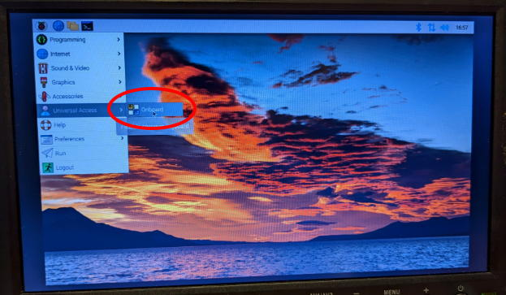
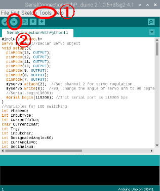
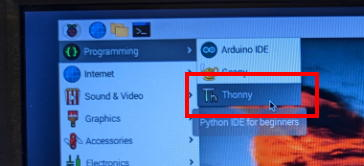
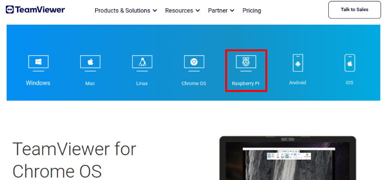
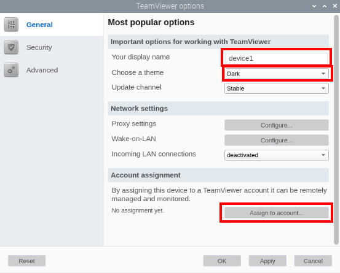
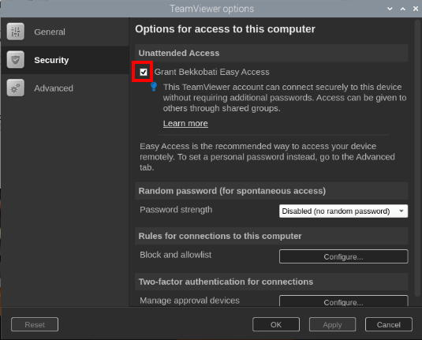

operanthouseのヘッダー
Kitaya lab
ラズベリーパイ4のセットアップ
※この解説では2022/9/22にリリースされたRaspberry PI OS (32bit)を使用しているのでもしインストールで問題が生じたら下記のアーカイブから同じものをインストールしてください。
http://downloads.raspberrypi.org/raspbian/images/
ラズベリーパイの初期設定を行います。キーボードとマウスを接続して下さい。またwifiが無ければランケーブルをラズパイに接続して下さい。
電源スイッチがラズベリーパイの電源ケーブルに付いているのでそれを押してください。（しばらく経っても起動しない場合はもう一度スイッチを押します）。
初期設定が完了したらこのようにディスクトップが表示されます。

ソフトキーボードのインストール
(参考URL https://pimylifeup.com/raspberry-pi-on-screen-keyboard/)キーボードレスにするとスペースを節約できるのでソフトキーボードをインストールします。
画面左上のTerminalをクリックしてください。

ターミナル画面が現れます。ラズパイではターミナルからプログラムをインストールします。

まずはラズパイのソフトを最新版に更新します。
半角で以下のようにターミナルに入力してEnterを押してください。

続いて以下のコマンドを入力してください。
sudo apt upgrade
sudo apt install onboard
Do you want to continue?と聞かれたらyを入力してエンターキーを押します。
onboardがバーチャルキーボードのソフトです。
OnboardはUniversal accessから起動できます。


画面スリープ機能のオフ
ラズベリーパイはデフォルトの設定だと一定時間経つと画面がスリープするのですが実験には不便なのでその機能を切りましょう。Raspberry Pi Configurationを起動します。

DisplayタブのScreen BlankingをDisableにしてラズベリーパイを再起動してください。

OpenCVのインストール
(参考URL https://raspberrypi-guide.github.io/programming/install-opencv)次にカメラ撮影等に必要なライブラリであるOpenCVをインストールしていきます。
まずはOpenCvに必要なパッケージを下のコマンドでインストールします。長いのでこのサイトをラズパイ上で開いてコピペすると良いです（コンソール画面上で右クリックからペーストできます）。
sudo apt-get install build-essential cmake pkg-config libjpeg-dev libtiff5-dev libjasper-dev libpng-dev libavcodec-dev libavformat-dev libswscale-dev libv4l-dev libxvidcore-dev libx264-dev libfontconfig1-dev libcairo2-dev libgdk-pixbuf2.0-dev libpango1.0-dev libgtk2.0-dev libgtk-3-dev libatlas-base-dev gfortran libhdf5-dev libhdf5-serial-dev libhdf5-103 python3-pyqt5 python3-dev -y
下のコマンドでOpenCvをインストールします。
pip install opencv-python==4.5.3.56
NumPyもインストールします。
pip install -U numpy
これで完了です。無事インストールされたかを試してみましょう。
コンソールに以下のコマンドを順に入力してください。
python3
import cv2
cv2.__version__
バージョンの番号が表示されたら正常にインストールされています。以下のコマンドを入れてpythonモードを終了します。
exit()
Arduinoのエディタのインストール
ラズパイからArduinoへプログラムを送る際に必要なArduinoのエディタを以下のコマンドでインストールします。sudo apt install arduino
オペラントハウスの導入
オペラントハウスのソフトをここからダウンロードしてディスクトップに解凍します。


この画面になったら上矢印を押して1つ前の階層へ移動してください。

OperantHouseのフォルダをディスクトップへドラッグ＆ドロップすればディスクトップへコピー出来ます。

Arduinoへオペラントハウス用の動作プログラムを転送します。
OperantHouse -> SerialConnectionWithPython16にあるSerialConnectionWithPython16.inoを開きます。
Arduinoのエディタが立ち上がるので①Tools→Portで表示されているポートを選択後、②ビルド＆転送ボタンを押してプログラムを転送します。

オペラントハウスを起動しましょう。
ラズパイではpythonプログラムはThonnyで実行できます(pythonファイルはデフォルトでThonnyで開くように設定する事をお勧めします)。

OperantHouseフォルダにある最新のOperantHouse*.pyをロードします。

念のため冒頭のBasical settingが以下のようにラズパイモード、シングルモニタモード、飼育解析モード、カメラによるタッチ検出モードになっているか確認して下さい。
違っていたら直してSaveしてください（半角入力）。

モニタの解像度が1280x800 pixelでない場合はここの数値を変更してください。タッチウィンドウのサイズと位置はここの値を元に決められます。

Runボタンを押せばオペラントハウスが起動します。

このような画面が出ます。
TouchWinボタンを押してパネルウィンドウを非表示にし、CamSizeボタンを押してカメラウィンドウを拡大します。

カメラウィンドウに映像が映っていればOKです。

以下のボタンを押し、報酬cue、 赤外線照明、天井照明の切り替え、サーボの動作が起きるか確認します。

問題がなければオペラントハウスのインストールは完了です。メインウィンドウ左のExitボタンかThonnyのStopボタンを押してプログラムを終了してください。
ディスクトップの色変更
ディスクトップに明るい色があるとマウスの気が散るのでディスクトップの色を黒くします。何もない所を右クリックしてDesktop Preferencesを選択します。

以下のように変更してOKを押します。


これで黒くなりました。
なおここまで作業してきたようにラズパイのセットアップは手間が掛かるのでこの時点で止めたSDカードを作り、今後装置を増やす際はそのSDカードからコピーすることをお勧めします。
詳しくは左のメニューのTipsを見て下さい。
TeamViewerのインストール
最後にTeamViewer(リモートディスクトップのソフト)をインストールします。TeamViewerの公式サイトからラズパイ用のインストーラーをダウンロードしてインストールします。
TeamViewerを起動したら装置の名前を入れ、テーマ色を黒にし、TeamViewerのアカウントでログインします(無料なので無ければ作ってください)。

次にSecurityタブに移り、Easy Accessをオンにします。これで自分のPCからリモート操作する度にパスワードを入力せずに済みます。
自分のPCから接続できるか確認してください。

以上でラズパイの設定は完了です。
ここから先は用途によって作業が異なります。
①タッチパネルのみ使う場合 → ｵﾌﾟｼｮﾝﾊﾟｰﾂ(ﾀｯﾁﾊﾟﾈﾙ)へ進んでください。
②レバーモジュールも使う場合 → ｵﾌﾟｼｮﾝﾊﾟｰﾂ(ﾚﾊﾞｰ)へ進んでください。
③赤外線センサーバー（NNAMC3460PCEV）を使う場合 → ｵﾌﾟｼｮﾝﾊﾟｰﾂ(ｾﾝｻｰﾊﾞｰ)へ進んでください。
①と③のどちらにすれば良いか分からない場合は取り敢えず①を試してみて下さい（③は隣り合ったマスクホールが縦長かつ近接している場合のみ必要です）。